Kubernetes AI Knowledge System
Complete User Manual — Setup, Operation, Testing & Utilization Encyclopedia
A self-hosted AI assistant that continuously indexes a live Kubernetes cluster into a Qdrant vector database via Change Data Capture, and exposes a natural-language query interface through n8n and Ollama — entirely local, no cloud APIs required.
01 Quick Reference: URLs & Credentials
Service URLs
| Service | URL | Auth |
|---|---|---|
| n8n Dashboard | http://localhost:30000 | Email + Password |
| AI Chat (public) | http://localhost:30000/webhook/k8s-ai-chat/chat | None |
| Qdrant Dashboard | http://localhost:30001/dashboard | None |
| k8s-watcher Health | http://localhost:30002/healthz | None |
| pgAdmin | http://localhost:30003 | Email + Password |
| Postgres (direct) | psql -h localhost -p 30004 -U n8n -d n8n_memory | Password |
| Reset Webhook | POST http://localhost:30000/webhook/k8s-reset | None |
| Ollama (host) | http://localhost:11434 | None |
Credentials
| Service | Username / Email | Password |
|---|---|---|
| n8n Dashboard | assaduzzaman.ict@gmail.com | ******** |
| n8n HTTP Basic Auth | admin | admin |
| pgAdmin | admin@example.com | admin |
| Postgres | n8n | n8n_memory |
Workflow IDs (Static — Embedded in JSON)
| Workflow | ID | Purpose |
|---|---|---|
| CDC_K8s_Flow | k8sCDCflow00001 | Kafka → embed → Qdrant upsert |
| AI_K8s_Flow | k8sAIflow000001 | Chat → AI Agent → tools → response |
| Reset_K8s_Flow | k8sRSTflow00001 | Wipe Qdrant + trigger resync |
| Memory_Clear_Flow | k8sMEMclear001 | Hourly DELETE from chat history |
Kubernetes Context
| Item | Value |
|---|---|
| Cluster name | k8s-ai |
| kubectl context | kind-k8s-ai |
| Namespace | k8s-ai |
| Kafka topic | k8s-resources |
| Kafka consumer group | n8n-cdc-consumer |
| Qdrant collection | k8s |
| Embedding model | nomic-embed-text:latest (768-dim) |
| Chat model | qwen3:14b-k8s (custom) |
NodePort Assignments
| Port | Service | Protocol |
|---|---|---|
| 30000 | n8n | HTTP |
| 30001 | Qdrant | HTTP |
| 30002 | k8s-watcher | HTTP |
| 30003 | pgAdmin | HTTP |
| 30004 | PostgreSQL | TCP |
02 System Architecture
Kubernetes API (kind cluster: k8s-ai) | watches 10 resource types (Namespace, Pod, Service, ConfigMap, PVC, Secret, Deployment, ReplicaSet, StatefulSet, DaemonSet) v k8s-watcher (Python pod, in-cluster config) | publishes JSON events to Kafka v Kafka (topic: k8s-resources, KRaft mode) | consumed by n8n Kafka Trigger v n8n CDC Flow → Parse → Delete old vector → Embed (nomic-embed-text) → Upsert to Qdrant | v Qdrant (collection: k8s, 768-dim Cosine, ~70 points) ^ | | (tool queries) | (semantic search results) | v n8n AI Agent Flow ← Chat Trigger ← User Query | | AI Agent (toolsAgent, maxIterations=5) | Tool: kubernetes_inventory (scroll all Qdrant data, group by kind/ns) | Tool: kubernetes_search (Qdrant semantic search, topK=20) | LLM: qwen3:14b-k8s (custom model, temperature 0) | Memory: PostgreSQL (session: k8s-ai-global, 5-turn window) | v Response (clean markdown table)
Six Pods in k8s-ai Namespace
| Pod | Role | Image |
|---|---|---|
| kafka-0 | Message broker (KRaft mode, no ZooKeeper) | confluentinc/cp-kafka |
| qdrant-* | Vector database (768-dim Cosine) | qdrant/qdrant |
| k8s-watcher-* | K8s API watcher → Kafka publisher | k8s-watcher:latest (custom) |
| n8n-* | Workflow engine (4 workflows) | n8nio/n8n:latest |
| postgres-* | Chat memory database | postgres:16 |
| pgadmin-* | Database browser UI | dpage/pgadmin4 |
03 Setup & Installation
Prerequisites
| Tool | Version | Check Command |
|---|---|---|
| Docker Desktop | 4.x+ | docker info --format '{{.ServerVersion}}' |
| kind | 0.24+ | kind version |
| kubectl | any | kubectl version --client |
| Ollama | any | ollama --version |
| Node.js | 18+ | node --version |
| python3 | 3.8+ | python3 --version |
One-Command Setup
./scripts/setup.shThis handles: cluster creation, pod deployment, k8s-watcher image build, Qdrant collection, workflow import, credential setup, activation, and E2E test execution (~4 minutes).
Setup Options
./scripts/setup.sh # full from-scratch setup
./scripts/setup.sh --keep-cluster # reuse existing cluster
./scripts/setup.sh --no-test # skip E2E tests
./scripts/cleanup.sh # delete cluster (keep data/)
./scripts/cleanup.sh --wipe-data --yes # full clean slate04 Verifying System Health
# All 6 pods running?
kubectl --context kind-k8s-ai -n k8s-ai get pods
# k8s-watcher healthy?
curl http://localhost:30002/healthz
# Qdrant populated?
curl -s http://localhost:30001/collections/k8s | python3 -c \
"import sys,json; r=json.load(sys.stdin)['result']; print(f'Points: {r[\"points_count\"]}')"
# AI webhook active? (should return 200)
curl -s -o /dev/null -w "%{http_code}" -X POST http://localhost:30000/webhook/k8s-ai-chat/chat \
-H 'Content-Type: application/json' -d '{"chatInput":"hello"}'
# Ollama models present?
ollama list | grep -E "nomic-embed-text|qwen3"Workflows are inactive. Run: ./scripts/setup.sh --keep-cluster --no-test
05 n8n Dashboard: Sign-In & Navigation
Step 1: Open Sign-In Page
Navigate to: http://localhost:30000
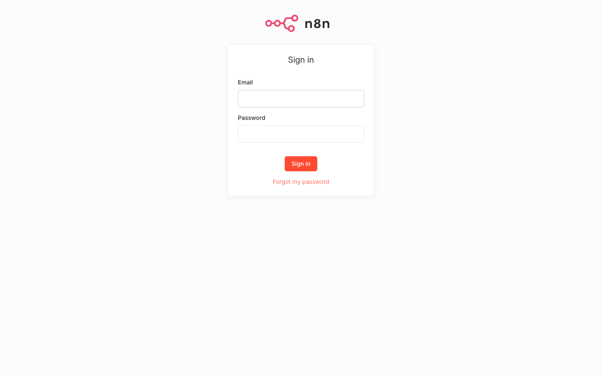
Step 2: Enter Credentials
n8n Login
Email: assaduzzaman.ict@gmail.com | Password: ********
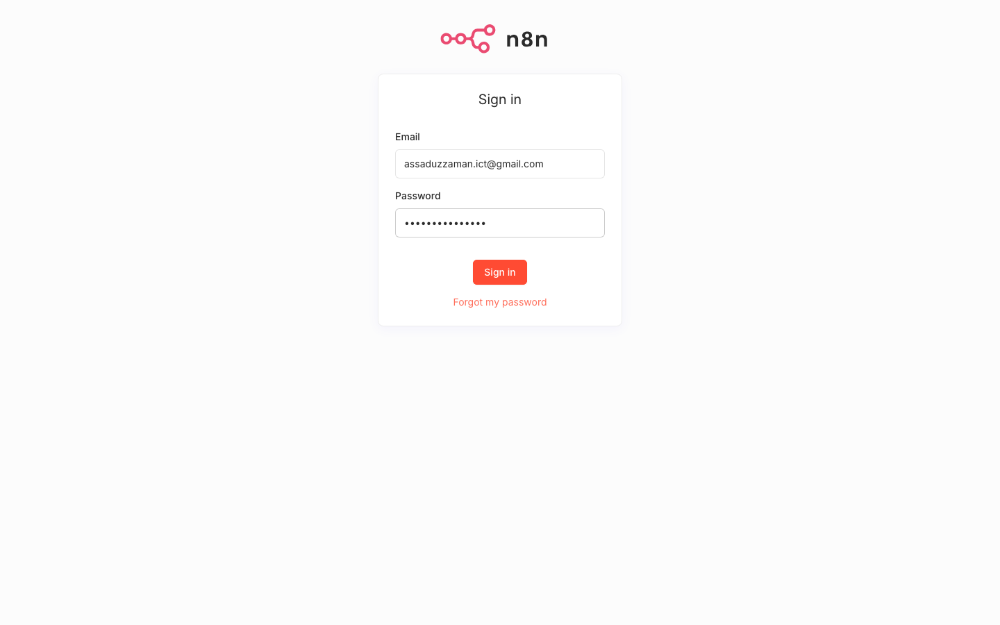
Step 3: Landing Page
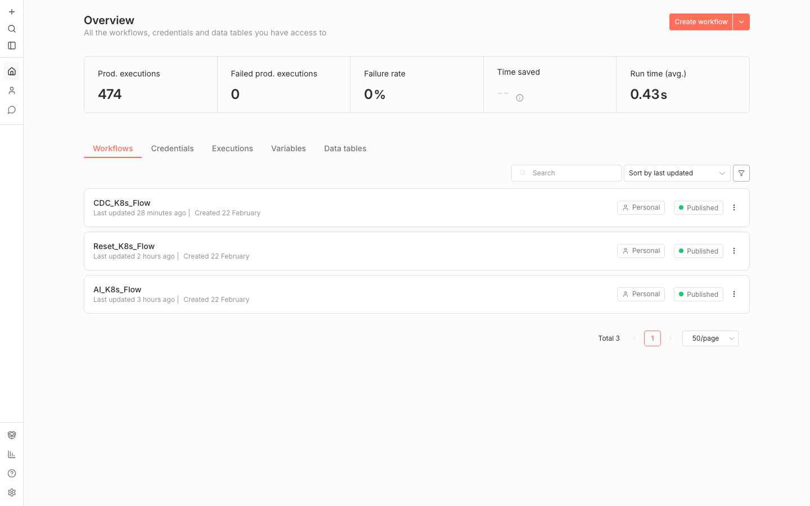
Step 4: Workflow Dashboard
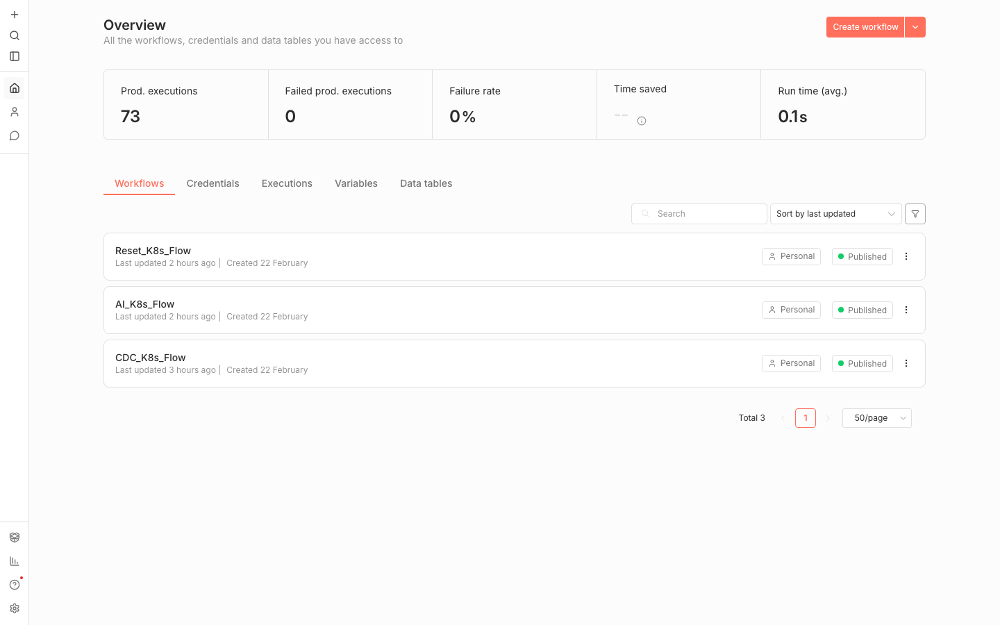
Step 5: Verify Active Status

Credentials List
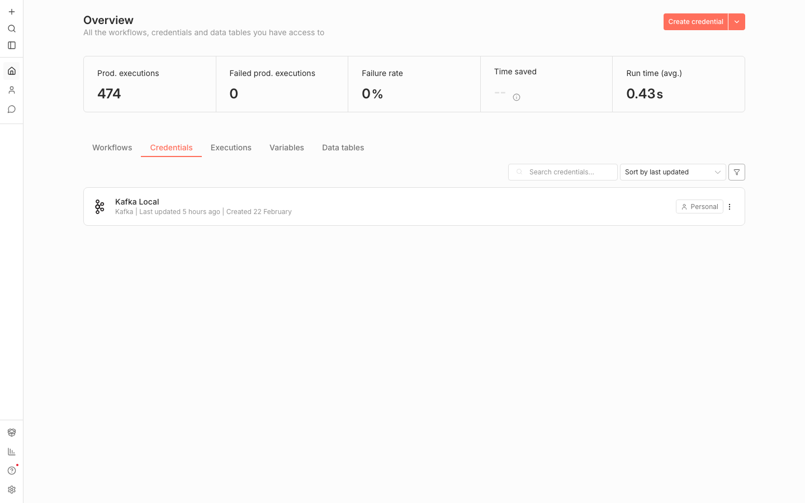
06 Workflow 1: CDC Pipeline (Real-Time Sync)
Continuously synchronizes Kubernetes cluster state into the Qdrant vector database. When any of the 10 watched resource types is created, updated, or deleted, the change flows through Kafka into Qdrant within seconds.
Workflow ID: k8sCDCflow00001 | Trigger: Kafka topic k8s-resources
Flow Diagram
Kafka Trigger (topic: k8s-resources, group: n8n-cdc-consumer) | raw JSON message from k8s-watcher v Parse Message Code | extract event_type, resource_uid, kind, name, namespace, embed_text v Is Delete Event? If/Else | | | TRUE | FALSE v v Delete Vector HTTP Format Document Code (filter by | build pageContent + metadata resource_uid) v [STOP] Generate Embedding HTTP | POST to Ollama nomic-embed-text | returns 768-dim vector v Upsert to Qdrant HTTP PUT /collections/k8s/points (resource_uid as point ID)
Canvas Screenshot
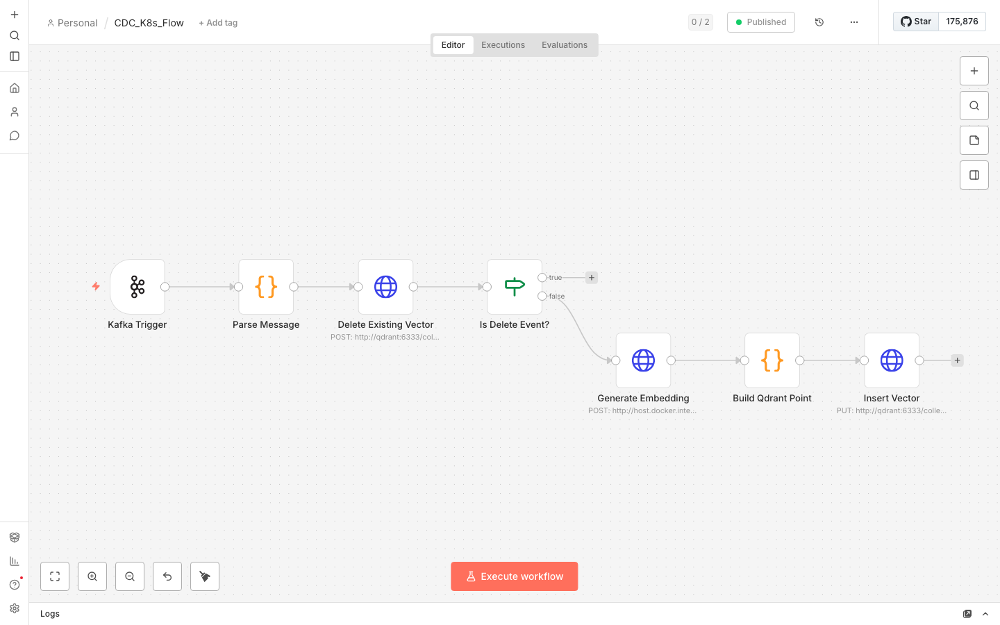
Node-by-Node Encyclopedia
| Setting | Value | Why |
|---|---|---|
| Topic | k8s-resources | Single topic for all 10 resource types |
| Group ID | n8n-cdc-consumer | Consumer group for offset tracking |
| Auto Offset Reset | latest | Only consume NEW messages; prevents replay of history on restart |
| Auto Topic Creation | false | Topic must be pre-created by Kafka |
Changing to "earliest" causes Kafka to replay the entire topic history on every n8n restart, flooding Qdrant with stale/duplicate points and breaking the Reset E2E test.
Value: Converts raw Kafka bytes into structured data. If k8s-watcher already included embed_text, uses it directly. Otherwise, constructs natural-language embed text: "Kubernetes {kind} named {name} in namespace {ns}. Labels: ..."
Customization tip: To change how resources are described to the AI, modify the embed_text construction in this node. Natural language format gives significantly better cosine similarity than terse key-value formats.
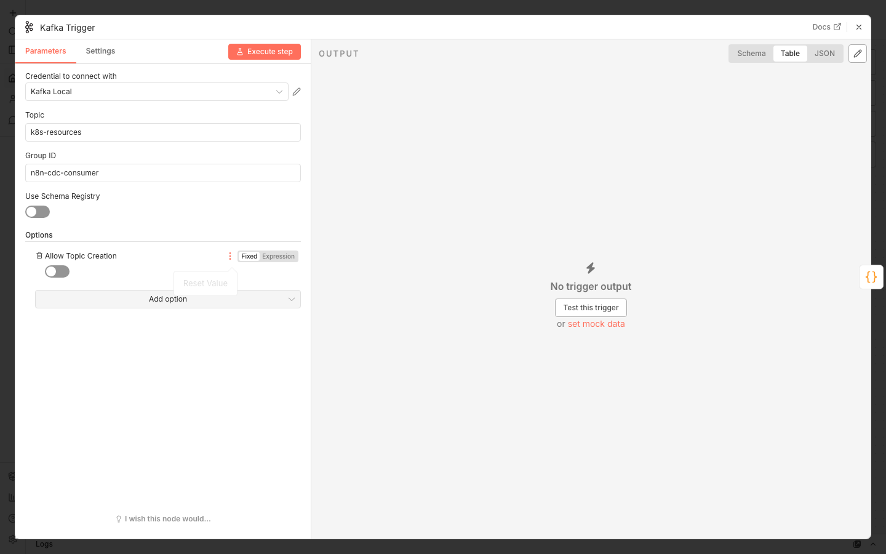
Condition: event_type === "DELETED" (string equals, case-sensitive)
Value: Prevents inserting a vector for a resource that no longer exists. DELETED events only need to remove the old Qdrant point.
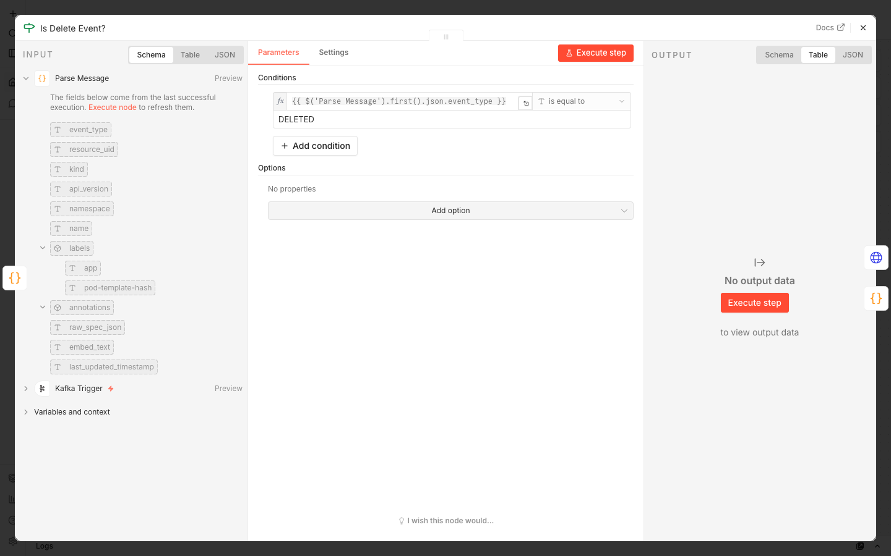
Endpoint: POST http://qdrant:6333/collections/k8s/points/delete
Body: Filter by metadata.resource_uid — finds both test-inserted and CDC-inserted points.
Value: Ensures deduplication. Without this, every MODIFIED event would create a duplicate vector. The filter-delete approach works regardless of how the point was originally inserted (by point ID or by auto-generated UUID).
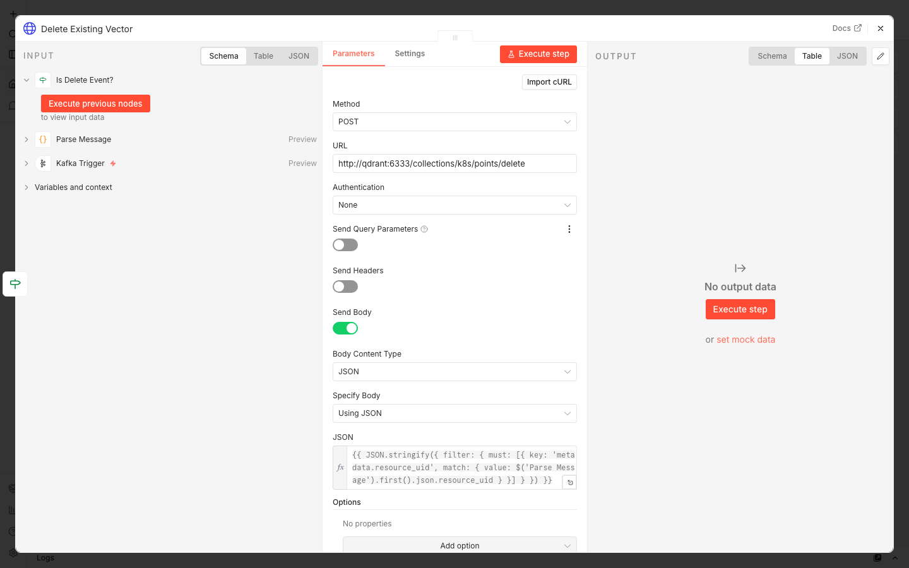
Value: Creates a compact spec_summary instead of storing the entire raw_spec_json. Includes resource-type-specific parsing: container images for Deployments, port mappings for Services, storage for PVCs, key names (never values) for Secrets.
Customization tip: To add custom metadata fields to Qdrant points, modify the metadata object in this node. Every field here becomes searchable/filterable in Qdrant.
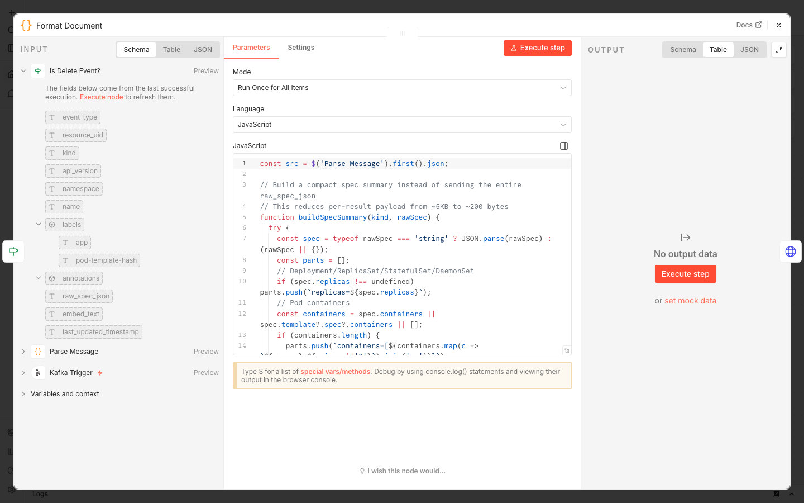
Endpoint: POST http://host.docker.internal:11434/api/embeddings
Model: nomic-embed-text:latest
Retry: 3 attempts with 2s delay (handles Ollama queue contention)
Batching: 1 message per batch, 1s interval (prevents Ollama overload)
Value: Converts natural-language resource descriptions into numerical vectors that enable semantic search. The 768-dim nomic-embed-text model produces scores in the 0.38–0.70 range for Kubernetes metadata.
Endpoint: PUT http://qdrant:6333/collections/k8s/points
Point ID: resource_uid (Kubernetes metadata.uid — deterministic, enables idempotent upserts)
Retry: 3 attempts with 2s delay
Value: Uses HTTP PUT (not the n8n Qdrant node) because the native node auto-generates UUID point IDs and cannot use resource_uid. HTTP PUT enables idempotent upserts — same UID always overwrites the same point.
Execution History

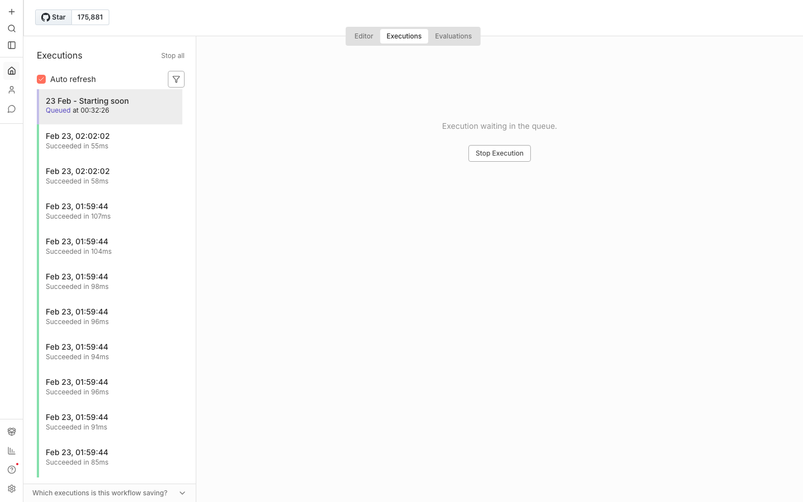
07 Workflow 2: AI Agent Query Pipeline
Receives natural-language queries via a public chat interface. An AI Agent with two tools fetches data from Qdrant (semantic search + full inventory scroll), generates a response using a custom Ollama model, and returns clean markdown tables. Conversation context is maintained across queries via PostgreSQL-backed memory.
Workflow ID: k8sAIflow000001 | Trigger: Chat webhook at /webhook/k8s-ai-chat/chat
Flow Diagram
User Query (browser chat or curl POST) | v Chat Trigger (public webhook: k8s-ai-chat) | v AI Agent (toolsAgent, maxIterations=5) | |—— ai_languageModel → Ollama Chat Model (qwen3:14b-k8s, temp=0) | |—— ai_tool [1] → Qdrant Vector Store "kubernetes_search" | | | |— ai_embedding → Embeddings Ollama (nomic-embed-text) | |—— ai_tool [2] → Code Tool "kubernetes_inventory" | (HTTP scroll all Qdrant points, group by kind/ns) | |—— ai_memory → Postgres Chat Memory | (session: k8s-ai-global, 5-turn window) v Response (markdown table + optional 1-line summary)
Canvas Screenshot
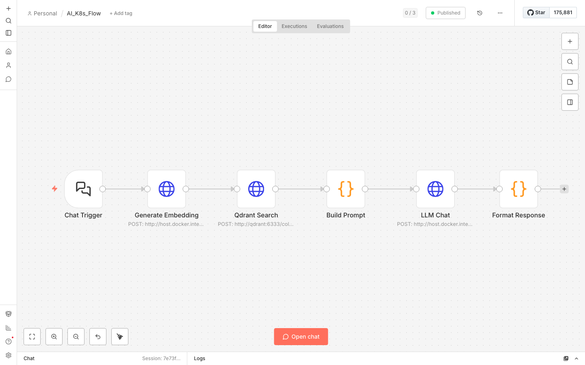
Node-by-Node Encyclopedia
| Setting | Value | Why |
|---|---|---|
| Webhook ID | k8s-ai-chat | Creates URL: /webhook/k8s-ai-chat/chat |
| Public | true | Accessible without n8n login |
| Title | "K8s AI Assistant" | Shown in chat UI header |
| Initial Message | "Hi there! I am k8s assistant..." | Greeting when chat opens |
Value: Provides both a browser-based chat UI and a REST API endpoint. The same webhook serves both: browsers get the rendered chat widget, curl gets JSON responses.
Customization tip: Change the initialMessages to modify the greeting. Change the webhook path in webhookId to use a different URL.
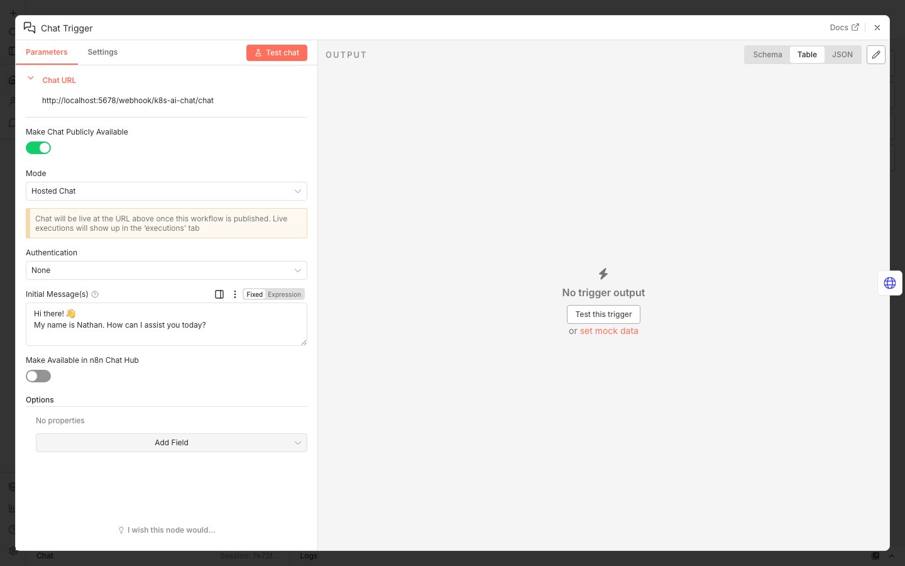
| Setting | Value | Why |
|---|---|---|
| Agent Type | toolsAgent | Multi-tool agent that decides which tool to call |
| Max Iterations | 5 | Up to 5 tool calls per query (prevents infinite loops) |
| System Message | (detailed — see below) | Controls tool selection logic and output format |
System Prompt (Critical for Behavior)
The AI Agent's system message defines HOW the agent selects tools and formats responses. This is the second layer of the two-layer prompt system (Modelfile SYSTEM is layer 1):
You are a Kubernetes cluster monitoring assistant for the kind cluster "k8s-ai".
/no_think
You have TWO tools. You MUST call a tool before EVERY answer.
## Tool Selection
**kubernetes_inventory** — ALWAYS use this when:
- Counting ("how many pods?")
- Listing ALL resources of a type ("list all configmaps")
- Aggregation ("resources per namespace")
- Follow-up about previously counted resources
- Cluster overview ("what is running?")
**kubernetes_search** — Use ONLY when:
- ONE specific named resource ("show me the coredns deployment")
- Searching by label ("find services with app=kafka")
- Deep details about a single resource
## Critical Rules
1. ALWAYS call a tool before answering
2. When in doubt, use kubernetes_inventory
3. NEVER invent or hallucinate resources
4. Output concise markdown tables
5. Never expose resource_uid or secret valuesCustomization tip: To add new tools or change tool selection logic, modify this system message. The model reads these rules on every query.
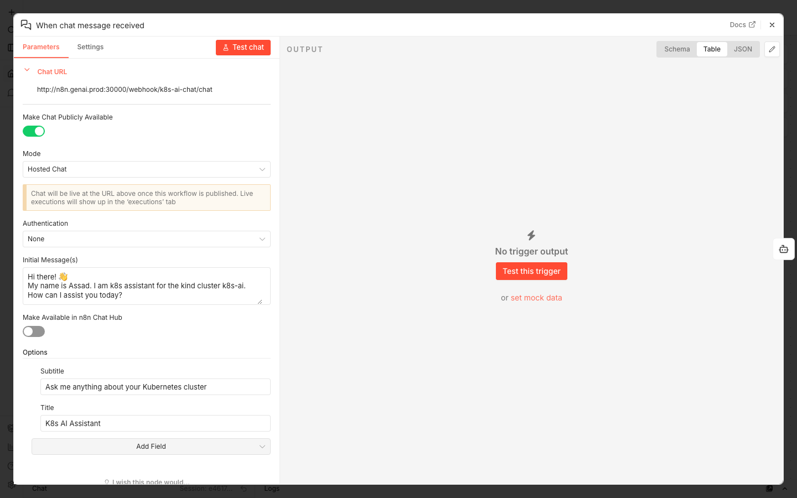
| Setting | Value | Why |
|---|---|---|
| Model | qwen3:14b-k8s | Custom model with baked-in K8s assistant persona |
| Temperature | 0 | Deterministic — same query always gives same format |
| Num Predict | 2048 | Max output tokens per response |
| Num Ctx | 32768 | 32K context window for large tool results |
| Base URL | http://host.docker.internal:11434 | Ollama runs on host, not in cluster |
Value: The custom model has a baked-in system prompt (table-only output, no thinking blocks) plus parameters (temperature 0, repeat_penalty 1). This creates consistent, machine-parseable output.
Customization tip: To use a different model, change the model name. To use a cloud LLM, replace this node with an OpenAI or Anthropic chat model node.
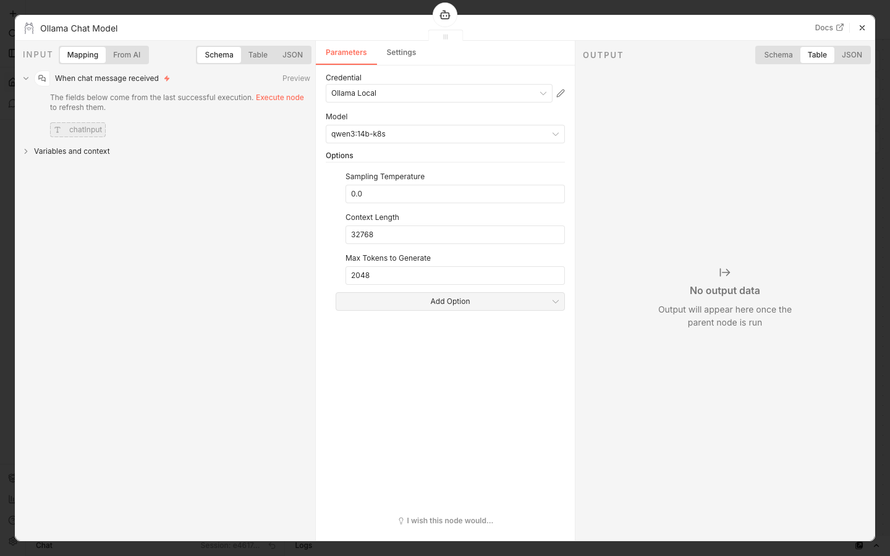
| Setting | Value | Why |
|---|---|---|
| Mode | retrieve-as-tool | AI Agent decides when to call it (not always) |
| Tool Name | kubernetes_search | How the Agent refers to this tool |
| Collection | k8s | Qdrant collection name |
| Top K | 20 | Return top 20 most similar vectors |
Value: Enables the AI to answer questions about specific resources ("tell me about coredns") by finding semantically similar vectors. The score threshold of 0.3 ensures Deployments (which score ~0.43) aren't silently excluded.
Customization tip: Increase Top K for larger clusters. Lower the score threshold if resources are being missed. To add a second collection (e.g., for logs), add another Vector Store node.
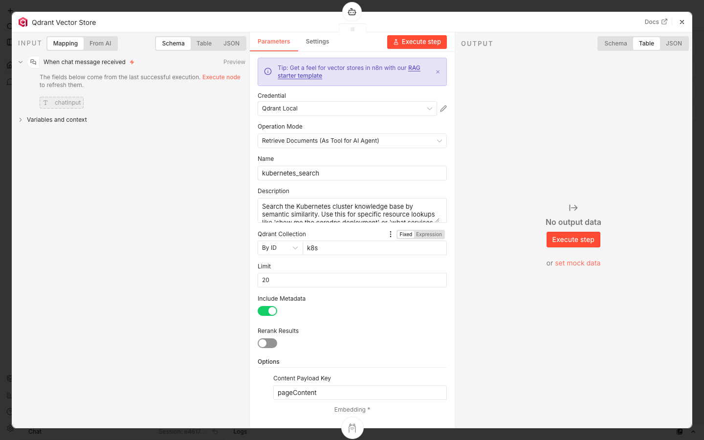
| Setting | Value | Why |
|---|---|---|
| Model | nomic-embed-text:latest | 768-dim embeddings, optimized for text similarity |
Value: Converts the user's natural-language query into a vector that can be compared against stored resource vectors using cosine similarity.
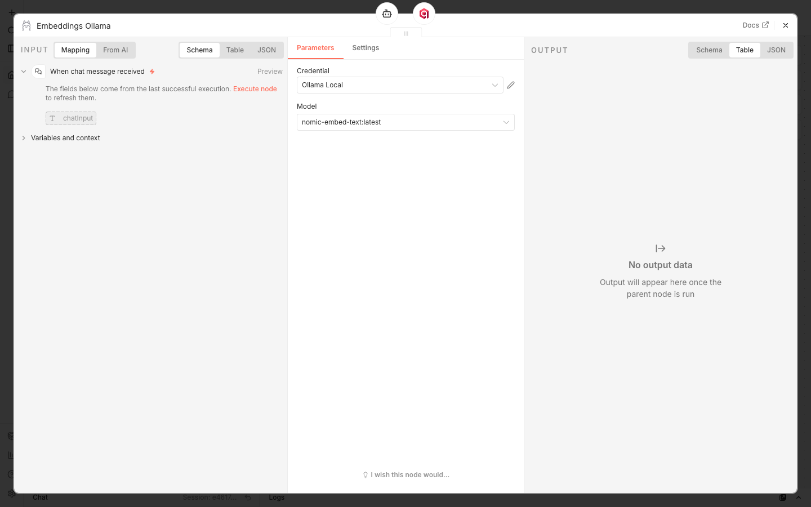
| Setting | Value | Why |
|---|---|---|
| Tool Name | kubernetes_inventory | How the Agent refers to this tool |
| Language | JavaScript | Runs inside n8n's sandbox |
How it works:
- Paginates through ALL Qdrant points (100 per page) using
this.helpers.httpRequest() - Extracts kind, name, namespace, labels, spec from each point's metadata
- Groups resources by namespace, then by kind within each namespace
- Returns a formatted text with namespace summaries and per-kind breakdowns
Value: Enables accurate counting and listing queries. The kubernetes_search tool (vector search) only returns top-20 matches — it can't count ALL pods. This tool scrolls everything and gives complete answers.
Why Code Tool instead of Workflow Tool: The toolWorkflow node requires complex workflowInputs resourceMapper config that fails on JSON import. toolCode with this.helpers.httpRequest() is simpler and reliable.
Customization tip: To add custom grouping (e.g., by label), modify the JavaScript code. To add new data sources, add more HTTP calls.
| Setting | Value | Why |
|---|---|---|
| Session ID | k8s-ai-global | Single shared session (single-user assistant) |
| Context Window | 5 | Last 5 message pairs retained |
| Table | n8n_chat_histories | PostgreSQL table for storage |
| Database | n8n_memory | Dedicated database for chat history |
Value: Enables follow-up queries like "list them" after "how many namespaces?". Without memory, every query would be independent.
Customization tip: For multi-user support, change sessionKey to a dynamic value (e.g., user ID from the request). Increase contextWindowLength for longer conversations (costs more tokens).
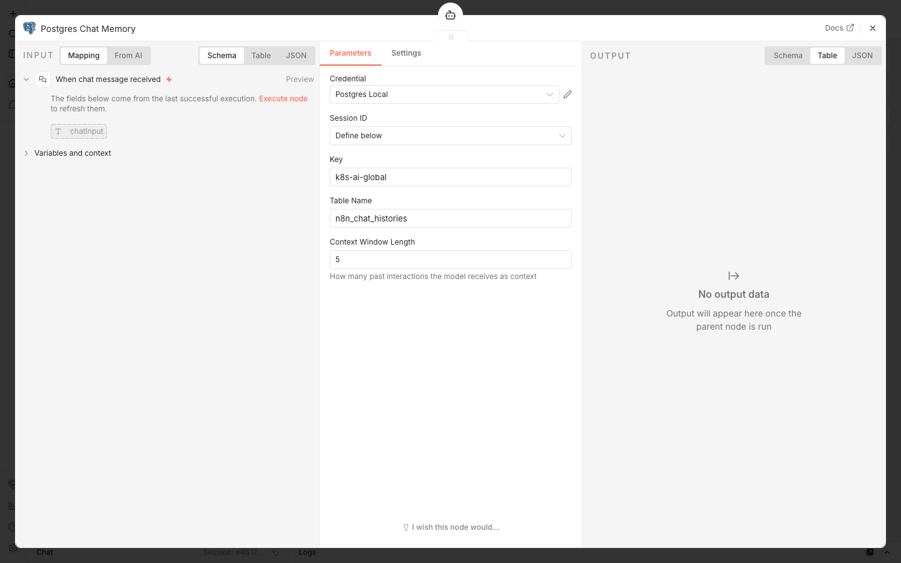
Tool Selection Decision Matrix
| User Query | Tool Called | Why |
|---|---|---|
| "How many pods are running?" | kubernetes_inventory | Counting query — needs ALL data |
| "List all namespaces" | kubernetes_inventory | Listing ALL resources of a type |
| "Show deployments per namespace" | kubernetes_inventory | Aggregation query |
| "What is running in the cluster?" | kubernetes_inventory | Cluster overview |
| "Tell me about the coredns deployment" | kubernetes_search | Specific named resource |
| "Find services with app=kafka" | kubernetes_search | Search by label |
| "What are the container images in kube-system?" | kubernetes_search | Deep details about resources |
08 Workflow 3: Reset & Resync
Wipes the entire Qdrant vector database and triggers a full re-index from the live Kubernetes cluster. Use this when vectors are stale, corrupted, or after schema changes.
Workflow ID: k8sRSTflow00001 | Triggers: POST /webhook/k8s-reset + Manual Trigger
Flow Diagram
Manual Trigger —————+ | Reset Webhook ——————+ (POST /webhook/k8s-reset) | v Delete Qdrant Collection HTTP DELETE (http://qdrant:6333/collections/k8s) | v Recreate Qdrant Collection HTTP PUT (768-dim Cosine, 2 segments, replication=1) | v Trigger Resync HTTP POST (http://k8s-watcher:8080/resync) | v Format Response Code {status:"ok", message:"...", reset_at:"..."}
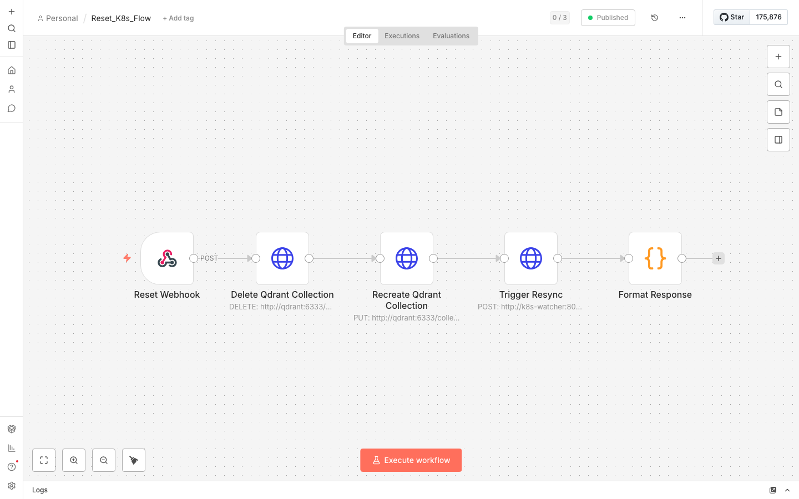
Node-by-Node Encyclopedia
Endpoint: POST http://localhost:30000/webhook/k8s-reset
Response Mode: lastNode — returns the Format Response output as the HTTP response
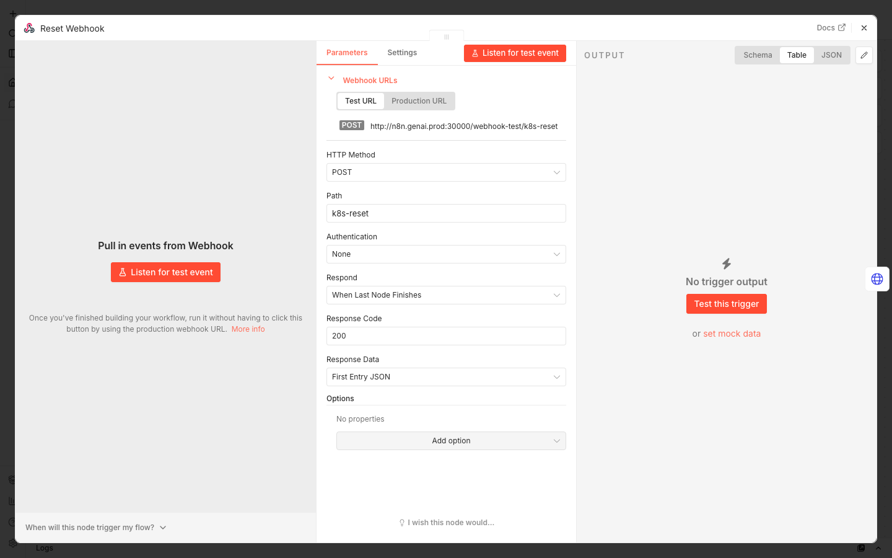
URL: DELETE http://qdrant:6333/collections/k8s
Value: Clean slate. Faster than deleting points one-by-one.
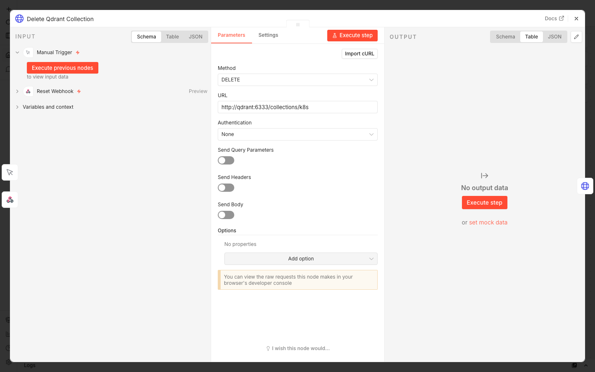
URL: PUT http://qdrant:6333/collections/k8s
Schema: 768 dimensions, Cosine distance, 2 segments, replication factor 1
Value: Ensures the collection schema matches what the embedding model produces (768-dim for nomic-embed-text).
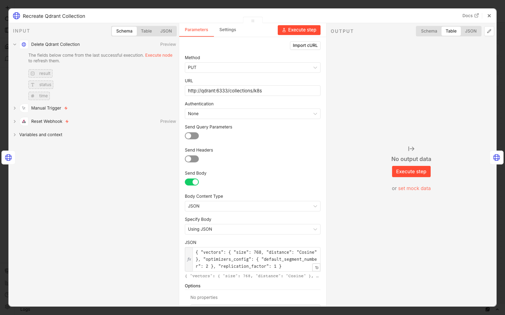
URL: POST http://k8s-watcher:8080/resync
Behavior: Returns 202 Accepted immediately. Resync runs asynchronously in a background thread. Qdrant repopulates in ~30-45 seconds.
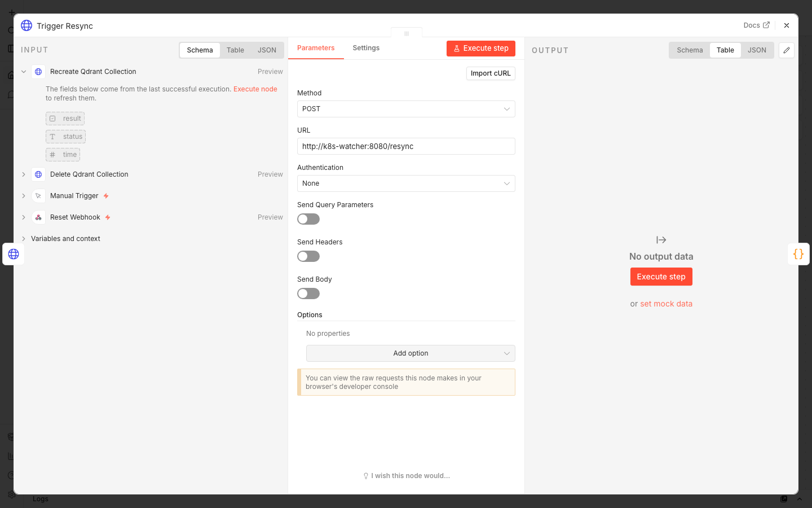
{ "status": "ok", "message": "Qdrant collection cleared and resync triggered...", "reset_at": "2026-03-12T..." }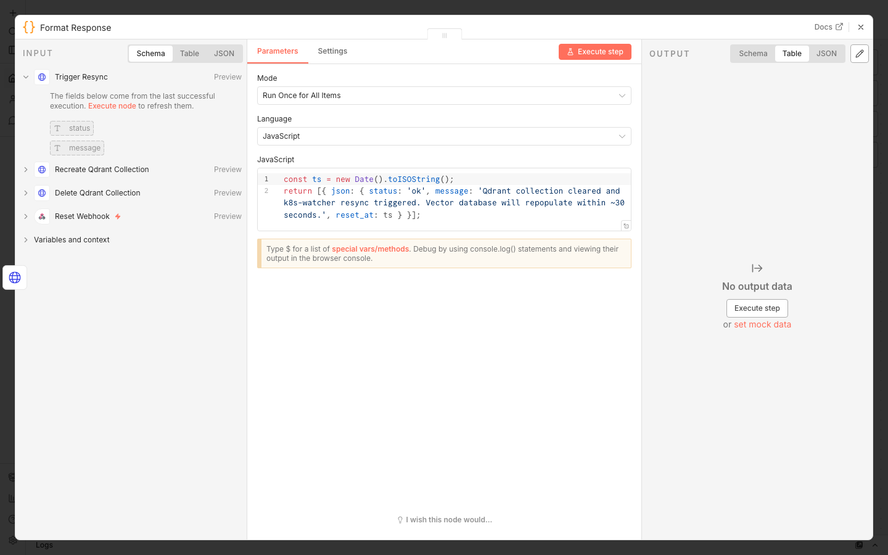
Qdrant is empty immediately after reset while k8s-watcher republishes all resources. Do not run queries or E2E tests until points_count ≥ 10.
09 Workflow 4: Memory Clear
Clears chat conversation history from PostgreSQL. Runs automatically every hour and can be triggered manually. Prevents memory from growing unbounded and ensures fresh context.
Workflow ID: k8sMEMclear001
Manual Trigger ———+ | Schedule Trigger ——+—→ Clear Memory Postgres (every 1 hour) DELETE FROM n8n_chat_histories
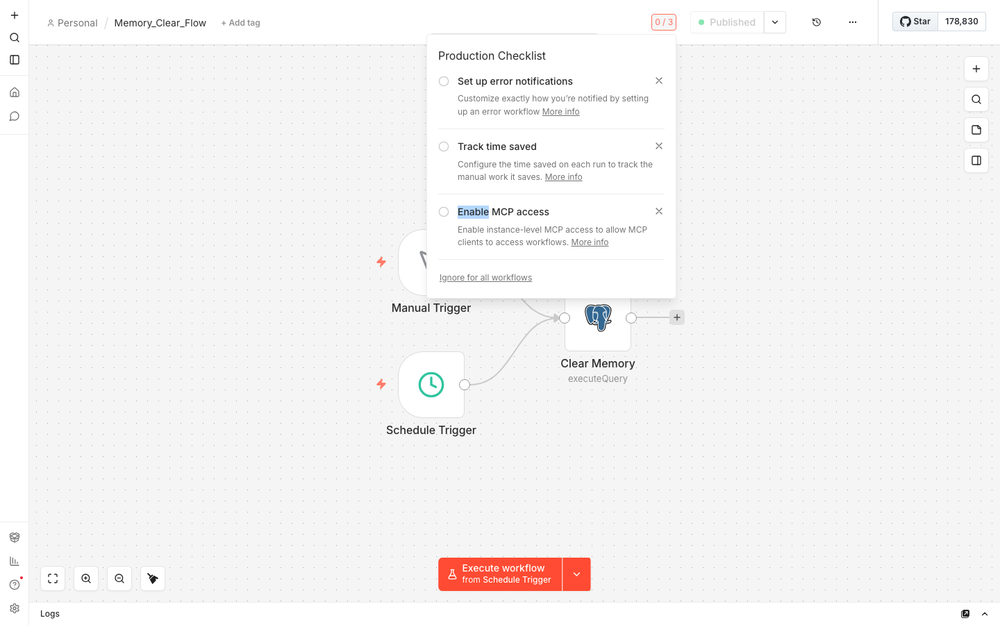

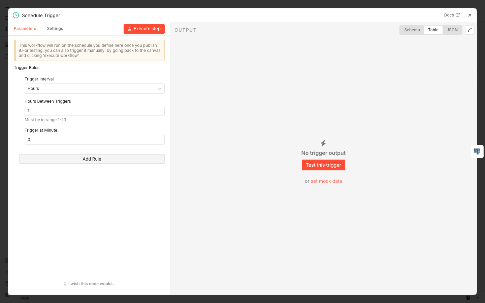
10 Using the AI Chat Interface
Browser-Based Chat (No Login Required)
Open: http://localhost:30000/webhook/k8s-ai-chat/chat
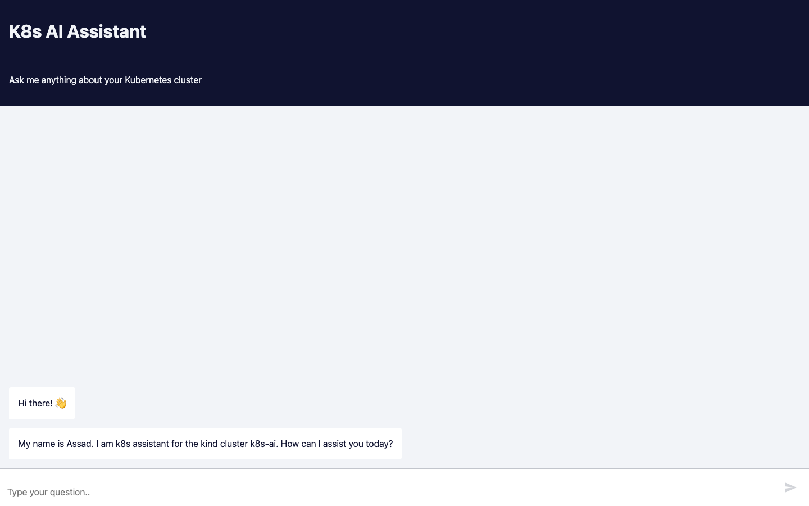
Sending a Query
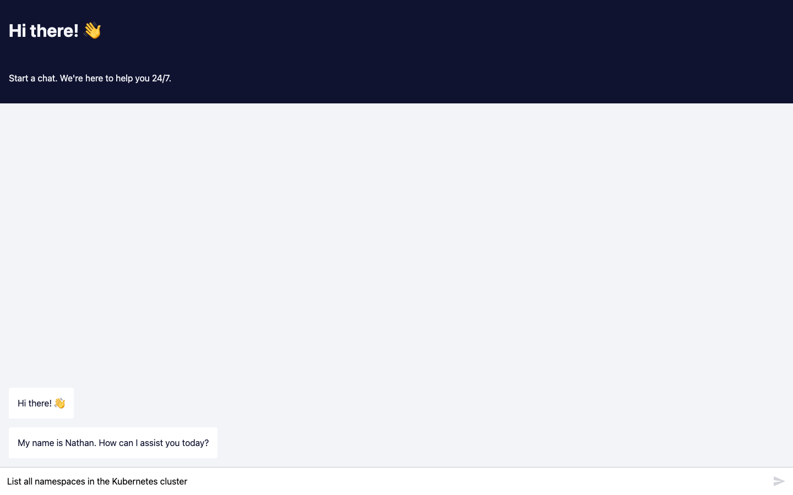
Receiving a Response
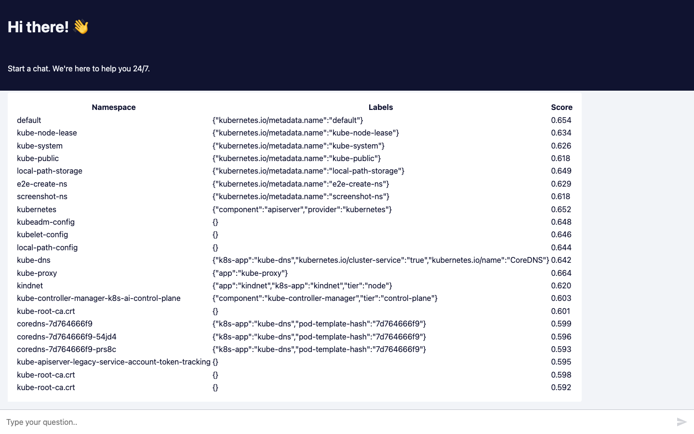
Query Examples
| Query | Tool Used | Expected Response Format |
|---|---|---|
| "How many pods are running?" | inventory | | Namespace | Pod Count | |
| "List all namespaces" | inventory | | Namespace | Resource Count | |
| "Show deployments per namespace" | inventory | | Namespace | Deployment | Replicas | |
| "Tell me about coredns deployment" | search | | Kind | Name | Namespace | Details | |
| "What secrets exist?" | inventory | | Kind | Name | Namespace | Type | |
| "Find services with kube-dns label" | search | | Kind | Name | Namespace | Labels | |
curl-Based Queries
# Count pods
curl -X POST http://localhost:30000/webhook/k8s-ai-chat/chat \
-H 'Content-Type: application/json' \
-d '{"chatInput": "How many pods are in the cluster?"}'
# List deployments
curl -X POST http://localhost:30000/webhook/k8s-ai-chat/chat \
-H 'Content-Type: application/json' \
-d '{"chatInput": "Show me all deployments and their replica counts"}'
# Secret query (values NEVER exposed)
curl -X POST http://localhost:30000/webhook/k8s-ai-chat/chat \
-H 'Content-Type: application/json' \
-d '{"chatInput": "What secrets exist in the cluster?"}'The system indexes Secret metadata only (name, type, key names). Base64-encoded values are discarded by k8s-watcher before publishing to Kafka. The AI can tell you "Secret X has keys: username, password" but can never reveal the actual values.
11 Chat Memory & Session Context
The AI maintains conversation context across queries. Ask "How many namespaces?" then follow up with "List them" — the AI remembers what "them" refers to.
| Setting | Value |
|---|---|
| Session ID | k8s-ai-global (shared across all users) |
| Context Window | 5 (last 5 message pairs) |
| Storage | PostgreSQL: n8n_memory.n8n_chat_histories |
| Auto-clear | Every hour (Memory_Clear_Flow) |
Inspect Chat History
psql -h localhost -p 30004 -U n8n -d n8n_memory \
-c "SELECT session_id, message->>'type' AS type, left(message->>'data', 80) AS preview FROM n8n_chat_histories ORDER BY id DESC LIMIT 10;"
# Password: n8n_memoryManual Clear
psql -h localhost -p 30004 -U n8n -d n8n_memory \
-c "DELETE FROM n8n_chat_histories;"12 Qdrant Vector Database
Dashboard: http://localhost:30001/dashboard
| Property | Value |
|---|---|
| Collection | k8s |
| Dimensions | 768 |
| Distance | Cosine |
| Embedding model | nomic-embed-text:latest |
| Score threshold | 0.3 |
| Typical points | 60-80 |
Useful Commands
# Point count
curl -s http://localhost:30001/collections/k8s | python3 -c \
"import sys,json; print('Points:', json.load(sys.stdin)['result']['points_count'])"
# Browse first 5 points
curl -s http://localhost:30001/collections/k8s/points/scroll \
-H 'Content-Type: application/json' \
-d '{"limit":5,"with_payload":true,"with_vector":false}' | python3 -m json.tool
# Filter by kind
curl -s http://localhost:30001/collections/k8s/points/scroll \
-H 'Content-Type: application/json' \
-d '{"filter":{"must":[{"key":"metadata.kind","match":{"value":"Deployment"}}]},"limit":20,"with_payload":true,"with_vector":false}' | python3 -m json.toolQdrant Point Structure
{
"id": "abc-123-def", // resource_uid from Kubernetes
"vector": [0.123, -0.456, ...], // 768 floats from nomic-embed-text
"payload": {
"pageContent": "Kubernetes Deployment named coredns in namespace kube-system...",
"metadata": {
"resource_uid": "abc-123-def",
"kind": "Deployment",
"namespace": "kube-system",
"name": "coredns",
"labels": "{\"k8s-app\":\"kube-dns\"}",
"annotations": "{}",
"spec_summary": "replicas=2; containers=[coredns:registry.k8s.io/coredns/coredns:v1.11.1]",
"last_updated_timestamp": "2026-03-12T..."
}
}
}13 pgAdmin: Database Browser
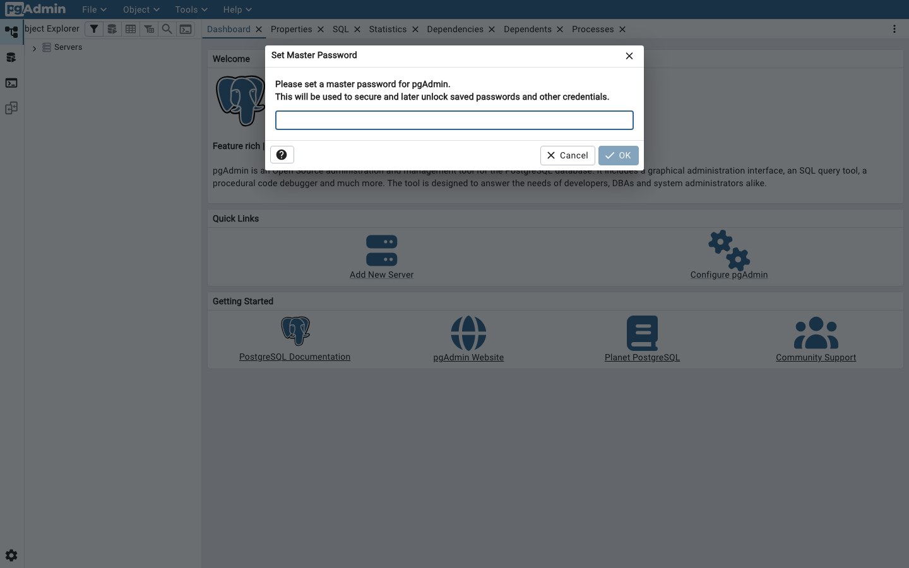
Navigation Path
Servers → k8s-ai Postgres → Databases → n8n_memory → Schemas → public → Tables → n8n_chat_histories
14 Running E2E Tests
Full Suite (15 Tests)
npm testSingle Test
npm run test:single "create namespace" # Test 1
npm run test:single "deployment query" # Test 8
npm run test:single "pod counts" # Test 13Test Groups
| Group | Tests | What They Validate | Dependencies |
|---|---|---|---|
| CDC | 1-3, 6 | Create/update/delete → Kafka → Qdrant | Kafka, Qdrant, Ollama (embed only) |
| Direct AI | 4, 7 | Ollama + Qdrant without n8n Agent | Qdrant, Ollama |
| AI Agent | 8-10 | Full pipeline via live webhook | All services + active AI workflow |
| Memory | 11-12 | Session context + clearing | Postgres + active AI workflow |
| Accuracy | 13-15 | AI output vs real kubectl results | All services + active AI workflow |
| Reset | 5 | Qdrant wipe + resync | All services + active Reset workflow |
Despite being numbered 5, the Reset test is declared last in the spec file. Reset wipes Qdrant, so it must execute after all other tests that depend on existing data.
Expected Output
✓ 1 CDC: create namespace → Kafka event + Qdrant insertion (2.9s)
✓ 2 CDC: update deployment → old vector replaced (2.0s)
✓ 3 CDC: delete resource → point removed from Qdrant (32ms)
✓ 4 AI: namespace count → markdown table response (3.4s)
✓ 6 CDC: create secret → safe metadata only (2.9s)
✓ 7 AI: secrets query → values never exposed (1.1s)
✓ 8 AI Agent: deployment query via Qdrant tool (26.5s)
✓ 9 AI Agent: namespace query via Qdrant tool (4.7s)
✓ 10 AI Agent: secrets query, values never exposed (16.4s)
✓ 11 Memory: consecutive queries share context (31.4s)
✓ 12 Memory: clear removes all chat history (451ms)
✓ 13 Accuracy: pod counts match kubectl (...)
✓ 14 Accuracy: deployment list matches kubectl (...)
✓ 15 Accuracy: namespace list matches kubectl (...)
✓ 5 Reset: Qdrant cleared + resync repopulates (3.4s)
15 passed15 API Reference
AI Chat
curl -X POST http://localhost:30000/webhook/k8s-ai-chat/chat \
-H 'Content-Type: application/json' \
-d '{"chatInput": "Show me all deployments"}'Reset & Resync
curl -X POST http://localhost:30000/webhook/k8s-reset \
-H 'Content-Type: application/json' -d '{}'Ollama Direct Chat
curl http://localhost:11434/api/chat -d '{
"model": "qwen3:14b-k8s",
"messages": [{"role":"user","content":"List namespaces"}],
"stream": false, "think": false
}' | python3 -c "import sys,json; print(json.load(sys.stdin)['message']['content'])"Ollama Embedding
curl http://localhost:11434/api/embed -d '{
"model": "nomic-embed-text",
"input": "Kubernetes Deployment named coredns"
}' | python3 -c "import sys,json; e=json.load(sys.stdin)['embeddings'][0]; print(f'Dims: {len(e)}')"Kafka Messages
# List topics
kubectl --context kind-k8s-ai -n k8s-ai exec kafka-0 -- \
/opt/kafka/bin/kafka-topics.sh --bootstrap-server localhost:9092 --list
# Read latest 3 messages
kubectl --context kind-k8s-ai -n k8s-ai exec kafka-0 -- \
/opt/kafka/bin/kafka-console-consumer.sh --bootstrap-server localhost:9092 \
--topic k8s-resources --from-beginning --max-messages 316 Ollama Model Management
# List models
ollama list
# Inspect custom model
ollama show qwen3:14b-k8s --modelfile
ollama show qwen3:14b-k8s --system
ollama show qwen3:14b-k8s --parameters
# Rebuild after editing Modelfile
ollama create qwen3:14b-k8s -f models/Modelfile.k8s
# Interactive chat
ollama run qwen3:14b-k8sFor the full model customization guide: Ollama Model Customization Guide (HTML)
17 k8s-watcher: Kubernetes API Monitor
A Python service running as a pod in the k8s-ai namespace. Watches the Kubernetes API for changes to 10 resource types and publishes events to Kafka.
Health Check
curl http://localhost:30002/healthz
# {"status":"ok"}Watched Resource Types (10)
| # | Resource | Scope | K8s API |
|---|---|---|---|
| 1 | Namespace | Cluster | v1.list_namespace |
| 2 | Pod | Namespaced | v1.list_pod_for_all_namespaces |
| 3 | Service | Namespaced | v1.list_service_for_all_namespaces |
| 4 | ConfigMap | Namespaced | v1.list_config_map_for_all_namespaces |
| 5 | PVC | Namespaced | v1.list_persistent_volume_claim_for_all_namespaces |
| 6 | Secret | Namespaced | v1.list_secret_for_all_namespaces |
| 7 | Deployment | Namespaced | apps.list_deployment_for_all_namespaces |
| 8 | ReplicaSet | Namespaced | apps.list_replica_set_for_all_namespaces |
| 9 | StatefulSet | Namespaced | apps.list_stateful_set_for_all_namespaces |
| 10 | DaemonSet | Namespaced | apps.list_daemon_set_for_all_namespaces |
Event Payload Format
{
"event_type": "ADDED|MODIFIED|DELETED",
"resource_uid": "abc-123",
"kind": "Deployment",
"namespace": "kube-system",
"name": "coredns",
"labels": {"k8s-app": "kube-dns"},
"annotations": {},
"raw_spec_json": "{...}",
"embed_text": "Kubernetes Deployment named coredns in namespace kube-system. Labels: k8s-app=kube-dns. Spec: ...",
"last_updated_timestamp": "2026-03-12T..."
}Secret Safety
When kind == "Secret", the watcher replaces the spec with {"type": "Opaque", "dataKeys": ["username", "password"]}. The base64-encoded values in raw["data"] are discarded. This applies to both watch events and resync.
Customization: Adding New Resource Types
To watch additional resources (e.g., Ingress, CronJob), edit k8s-watcher/watcher.py:
- Add a new watch thread in the
main()function - Add the list function to
resync_all() - Rebuild:
docker build -t k8s-watcher:latest ./k8s-watcher/ && kind load docker-image k8s-watcher:latest --name k8s-ai - Restart:
kubectl -n k8s-ai rollout restart deployment/k8s-watcher
18 Common Operations & Maintenance
After Docker Desktop Restart
# Pods auto-restart (wait ~30s). Verify:
kubectl --context kind-k8s-ai -n k8s-ai get podsRe-Import Workflows
./scripts/setup.sh --keep-cluster --no-testRebuild k8s-watcher
docker build -t k8s-watcher:latest ./k8s-watcher/
kind load docker-image k8s-watcher:latest --name k8s-ai
kubectl --context kind-k8s-ai -n k8s-ai rollout restart deployment/k8s-watcherView Pod Logs
kubectl --context kind-k8s-ai -n k8s-ai logs -f deployment/k8s-watcher
kubectl --context kind-k8s-ai -n k8s-ai logs -f deployment/n8n
kubectl --context kind-k8s-ai -n k8s-ai logs -f kafka-0Capture Screenshots
N8N_EMAIL=assaduzzaman.ict@gmail.com N8N_PASS='********' npm run screenshotsFull Teardown
./scripts/cleanup.sh # keep data/
./scripts/cleanup.sh --wipe-data --yes # delete everything19 Troubleshooting
| Symptom | Cause | Fix |
|---|---|---|
| Webhook returns 404 | Workflows inactive | ./scripts/setup.sh --keep-cluster --no-test |
| Qdrant has 0 points | Reset just triggered | Wait 30-45s for repopulation |
| AI says "No results" | Qdrant empty or Ollama down | Check point count + ollama list |
| Tests 8-10 fail with 404 | AI workflow inactive | Reimport workflows |
| Tests 13-15 accuracy mismatch | Stale Qdrant data | curl -X POST http://localhost:30000/webhook/k8s-reset -d '{}' |
| Port 30000 in use | Other kind cluster running | docker ps | grep 30000 then stop it |
| Ollama ECONNREFUSED from pods | Ollama not running on host | ollama serve & |
| SQLITE_CORRUPT in n8n logs | Concurrent sqlite3 writes | ./scripts/cleanup.sh --wipe-data && ./scripts/setup.sh |
| Pods not starting | Manifests not applied | kubectl apply -f infra/k8s/ |
| k8s-watcher CrashLoopBackOff | Image not loaded into kind | kind load docker-image k8s-watcher:latest --name k8s-ai |